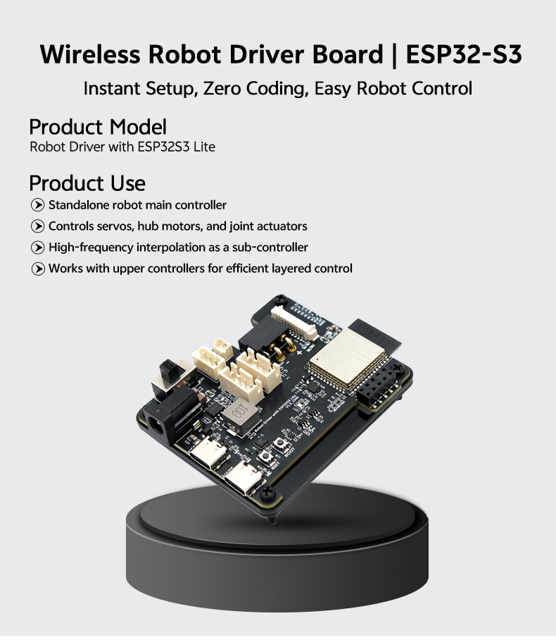
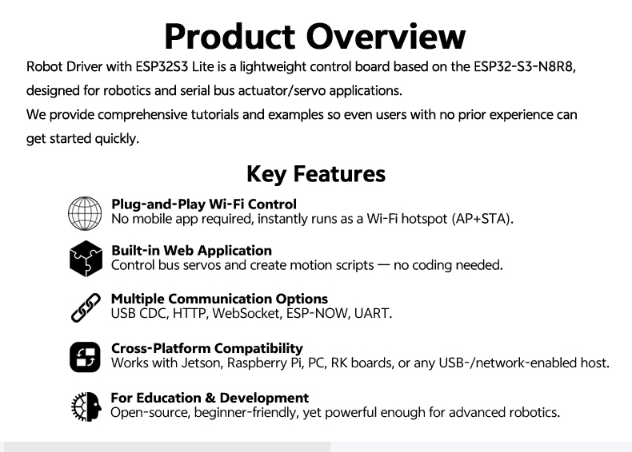
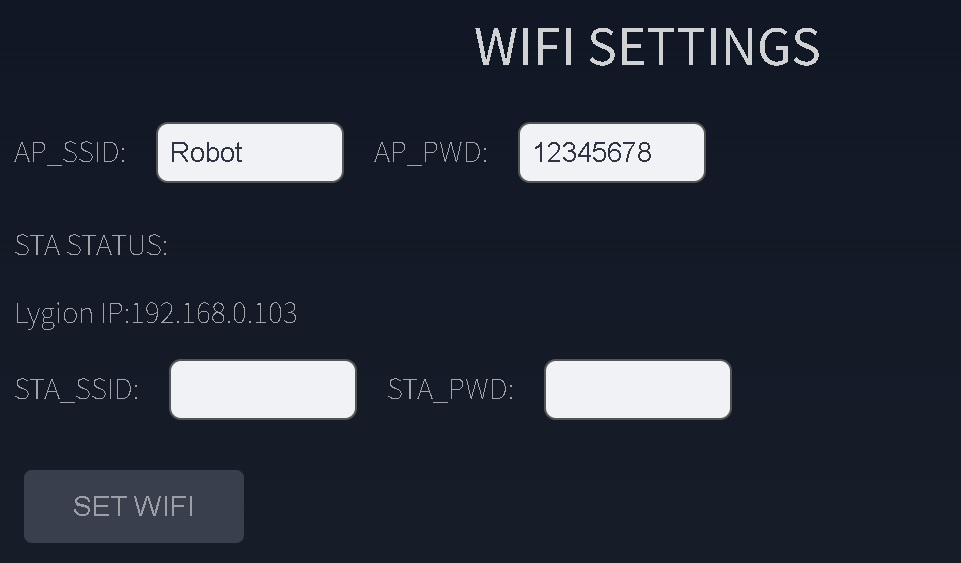
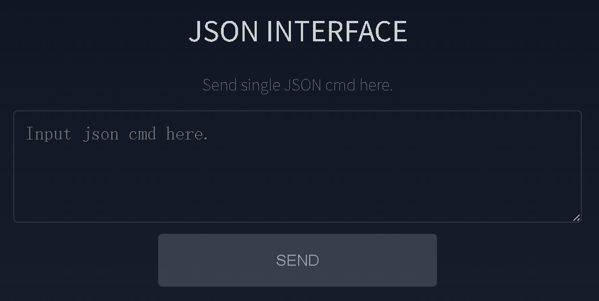
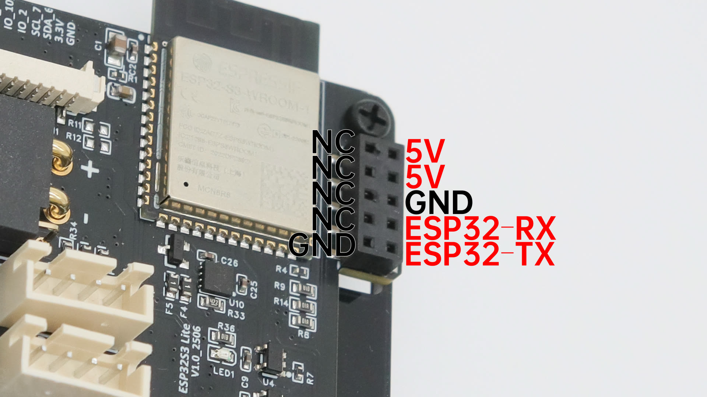
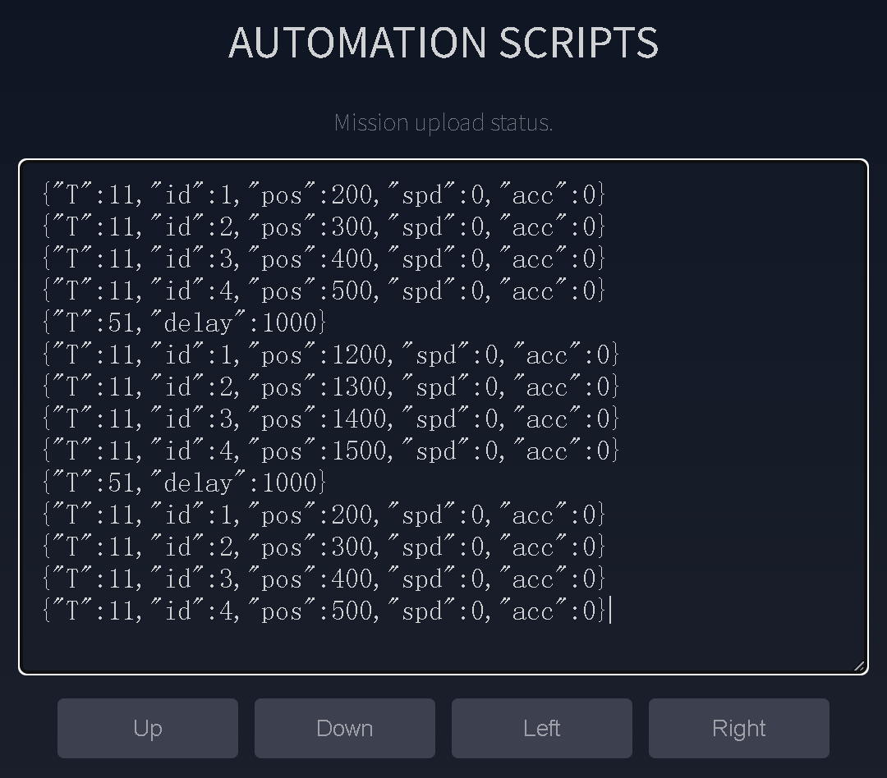
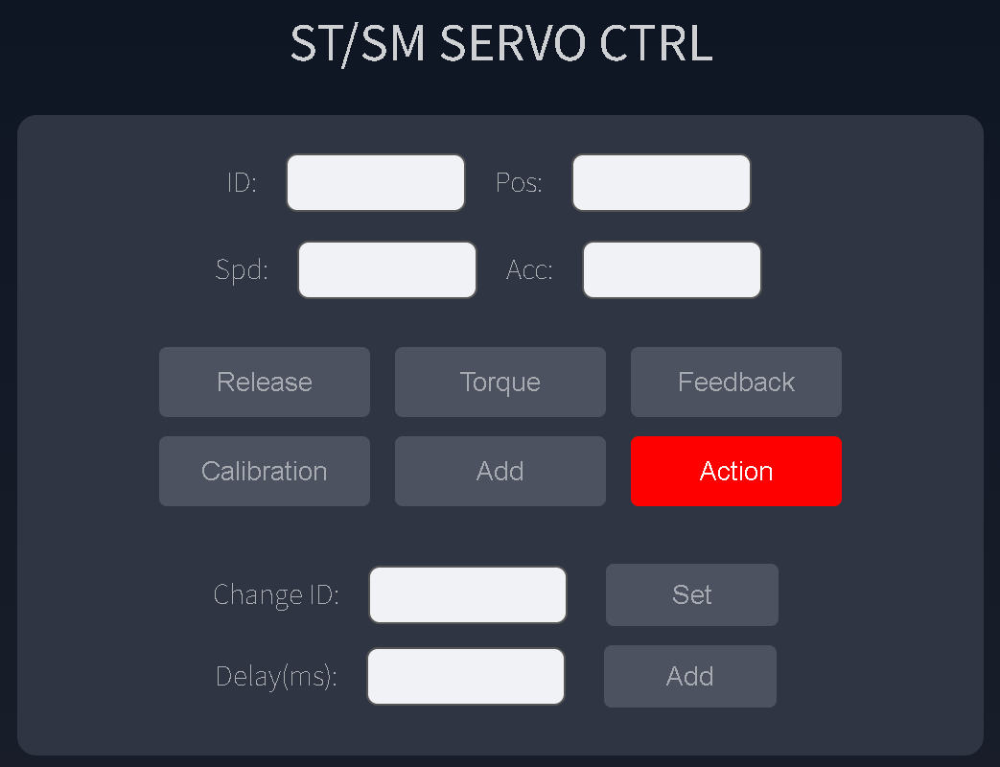
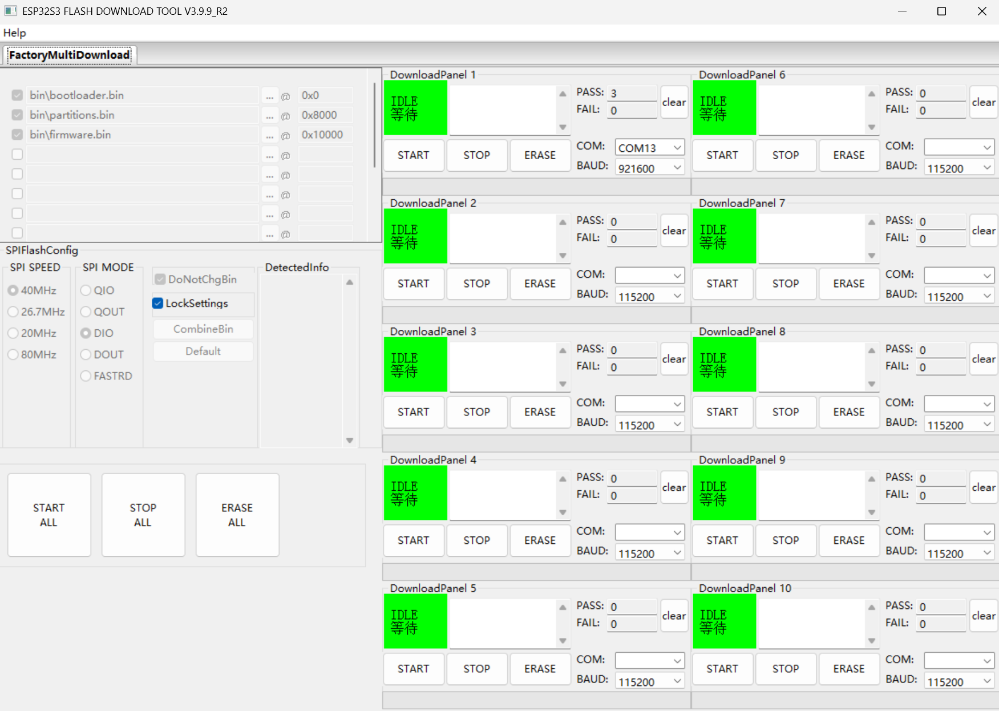
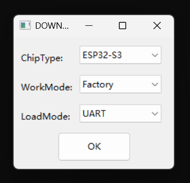

Robot sub-controller board
Robot Driver with ESP32S3 Lite
浏览器直控、任务脚本与多总线执行器接入的一体化机器人控制板
这块控制板把 Web 控制台、本地按键交互、动作任务文件和上位机 JSON 通信合在同一套 ESP32-S3 平台里。当前页面仅整理资料包、现有 Wiki 与实拍素材中可直接确认的内容，不补写未明确标注的参数。
供电边界先确认：DC5521 与 XT30(2+2) 的输入会直接供给总线执行器，必须按所接舵机、关节或轮毂电机的额定电压选电源。Type-C 可以启动主控和屏幕，但不能替代动力供电。



Highlights
从浏览器调试到机器人大小脑架构，都能落在同一块控制板上
Robot Driver with ESP32S3 Lite 的核心价值，不只是能驱动总线舵机，而是把本地控制、无线接入、任务文件、执行器总线和上位机接口做成了可直接部署的整板方案。
浏览器即控制台
出厂固件内置 Web 应用，浏览器访问设备 IP 即可配置网络、控制舵机、编排动作与发送 JSON，无需额外 App。
统一 JSON，多链路接入
USB CDC、HTTP、WebSocket 与 GPIO UART 共用同一套 JSON 指令，便于把调试脚本、网页动作和上位机程序复用到同一设备。
支持 TTL、RS485 与 CAN 执行器
板上同时提供单线 TTL、RS485、CAN 接口，可接总线舵机、关节执行器和轮毂电机，适合原型阶段快速切换执行器方案。
任务文件可离线运行
动作脚本保存成 `.mission` 文件后，不需要保持浏览器连接，也能通过五向开关或开机流程独立执行。
本地交互资源完整
0.91 英寸 OLED、五向开关和蜂鸣器都集成在板上，适合现场调试、显示网络状态和绑定本地触发动作。
适合继续二次开发
文档已给出 PlatformIO、固件恢复、主机通信和开源项目入口，可直接作为 Raspberry Pi、Jetson 或 PC 的下位机。



Web console
AP 热点直连就能上手，STA 接入后可切到局域网控制
控制板默认支持 AP 与 STA 两种网络模式。首次使用时，浏览器连接热点后访问 http://192.168.4.1 即可进入控制台；接入路由器后，再通过 OLED 或 STA STATUS 显示的 IP 访问设备。
- 默认热点：
Robot，密码12345678。 - 实时状态：
Uptime、当前总线波特率和 MAC 地址会在页面顶部显示。 - 快速切换波特率：提供
115200、500K、1M、3M快捷按钮。 - 单条 JSON 调试：
JSON Interface适合即时测试控制指令和设备响应。 - 支持主机联调：同一套指令可以后续迁移到 Python、串口、HTTP 或 WebSocket 程序中。
使用提醒：Web 页面显示的
AP_SSID 和 AP_PWD 可能仍是出厂默认值；若已改过实际热点信息，请以 OLED 启动时显示内容为准。
Host communication
同一套 JSON 指令，可按布线方式和实时性选择不同主机接口
文档把主机接入拆成 USB CDC、HTTP、WebSocket 与 GPIO UART 四条路径。对开发团队来说，这意味着可以先用浏览器和串口调通，再根据项目结构切到单板电脑或嵌入式主控。
/api/cmd，适合配置、低频控制和快速原型。
ws://<设备IP>:80/ws，适合实时控制和状态双向推送。
Hardware resources
板载资源、HAT 接口与供电边界都已经有图可查
现有资料把板上接口、电源路径、本地交互组件和 HAT 引脚标得比较完整。这里把最关键的接入信息转成 HTML 文本，后续更方便做 SEO、检索和 FAQ 复用。

板上已确认资源
- 主控：ESP32-S3-WROOM-1 R8N8。
- 本地交互：0.91 英寸 OLED、五向开关、无源蜂鸣器。
- 执行器接口：单线 TTL、RS485、CAN。
- 主机接口：USB Type-C、UART Type-C、2×5 HAT、扩展 IO。
- 电源资源：5V 5A DC-DC 与 3.3V LDO。
- 维护入口：IO0、EN 按键用于刷机与复位。

接线时先看这几个边界
- USB 与 UART Type-C 不是同一个用途：
USB走原生 USB CDC，UART主要用于透传和固件恢复。 - 电源开关只控制动力侧：即使开关为
OFF，连接 Type-C 后主控、OLED 与 Wi-Fi 仍会启动。 - 总线设备应统一波特率：混用不同波特率会导致部分设备不响应。
- 扩展 IO 有占用：蜂鸣器、五向开关与 OLED 已占用部分 IO，二次开发时应避开冲突引脚。
Automation scripts
把多条 JSON 保存成任务文件，绑定按键或设置为开机循环
Robot Driver 的动作脚本系统适合把重复动作、测试流程或演示步骤写成任务文件。每行一条 JSON，保存后无需持续连接浏览器，控制板就能独立执行。
up.mission、down.mission、left.mission、right.mission，并绑定五向开关方向。
boot_user.mission，每次开机后无限循环执行。
{"T":0} 立即停止当前任务。
脚本写法要求：
Automation Scripts 输入框里每行只能是一条完整 JSON。正式保存到开机任务前，建议先在单条 JSON Interface 中逐步验证动作。



Development and recovery
支持 PlatformIO 二次开发，也预留了固件恢复和手动下载模式
对于需要改固件的人，资料已经给出开源项目地址、PlatformIO 路径和刷机恢复流程。自动下载异常时，还能通过 IO0 与 EN 手动进入下载模式。
- 开发框架：Arduino，推荐 VS Code + PlatformIO。
- 开源项目：现有文档指向官方 GitHub 固件与示例工程。
- 刷机入口：板载
UARTType-C 默认用于串口透传和固件恢复。 - 手动下载模式：按住 IO0，再点按 EN 后释放，可强制进入下载状态。

Specifications
当前资料可直接确认的 Robot Driver with ESP32S3 Lite 参数
| 产品型号 | Robot Driver with ESP32S3 Lite |
|---|---|
| 产品定位 | 机器人控制板，可独立运行，也可作为 Raspberry Pi、Jetson 或 PC 的下位机 |
| 主控模块 | ESP32-S3-WROOM-1 R8N8 |
| 输入电压 | DC 6~20V，必须与所接执行器额定电压匹配 |
| 执行器接口 | 单线 TTL、RS485、CAN |
| 主机通信 | USB CDC、GPIO UART、USB UART、HTTP、WebSocket |
| 无线通信 | Wi-Fi AP + STA、ESP-NOW |
| 本地交互 | 0.91 英寸 OLED、五向开关、无源蜂鸣器 |
| 板载电源 | 5V 5A DC-DC，3.3V LDO |
| 默认总线波特率 | 1 Mbps |
| 波特率快捷档位 | 115200 / 500K / 1M / 3M |
| 默认热点 | Robot |
| 默认热点密码 | 12345678 |
| AP 访问地址 | http://192.168.4.1 |
| HTTP 接口 | http://<设备IP>/api/cmd |
| WebSocket 接口 | ws://<设备IP>:80/ws |
| 数据格式 | JSON |
| 结构资料 | STEP 三维图纸可用于安装与空间评估 |